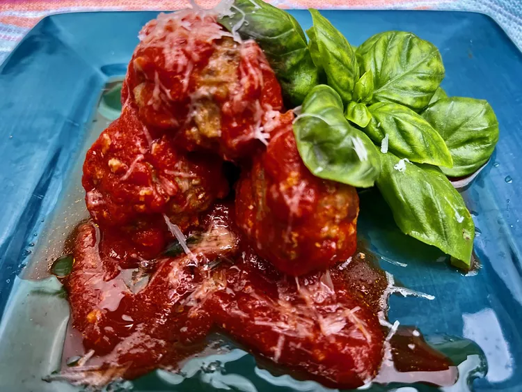

Polpette

Polpette (Italian Meatballs)
These tasty Italian meatballs (polpette) start off in the oven, and finish by simmering in a simple tomato sauce. We love them as a main dish, with a side of sautéed zucchini and a salad.
Ingredients
- 1 pound ground sweet Italian pork sausage
- 1 pound ground beef
- 2/3 cup minced shallot
- 1/2 cup freshly grated Parmesan cheese, plus more for serving
- 1/4 cup Italian seasoned breadcrumbs
- 3 large eggs, lightly beaten
- 1/2 cup whole milk
- 1/2 teaspoon freshly ground black pepper (see Note)
- 1 cup water
- 2 (24-ounce) jars tomato puree
- 5 cloves garlic, minced
- 1 teaspoon Italian herb seasoning blend
- salt to taste
- 2 tablespoons extra virgin olive oil, or as needed
- fresh basil leaves
Steps
- vCombine sausage, ground beef, shallot, Parmesan cheese, and breadcrumbs in a large bowl. Use a wooden spoon to break up the ground meat and roughly mix ingredients together. Stir in beaten eggs, milk, and black pepper. Use your hands to mix all ingredients well.
- Preheat the oven to 400 degrees F (200 degrees C). Line a sheet pan with parchment paper or aluminum foil.
- Pour water into a shallow bowl, and moisten fingertips and palms with water. Shape meatball mixture into about 40 ping-pong sized balls and place on the prepared sheet pan. When fingers become sticky, dip them in water.
- Bake meatballs in the preheated oven until lightly browned and a bit underdone in the center, about 20 minutes. If meatballs are larger, adjust baking time.
- Pour tomato purée into a large sauce pot or a Dutch oven set over medium-low heat. Stir in minced garlic and Italian herbs. Sample the sauce for seasoning, and adjust, if needed.
- When sauce begins to bubble slightly, add meatballs and stir gently, coating all the meatballs with sauce. Keep meatballs and sauce at a low simmer and cook, uncovered, about 20 minutes.
- To serve, place meatballs and sauce on a plate, drizzle with extra virgin olive oil, garnish with fresh basil leaves, and sprinkle with additional grated Parmesan cheese, if desired.